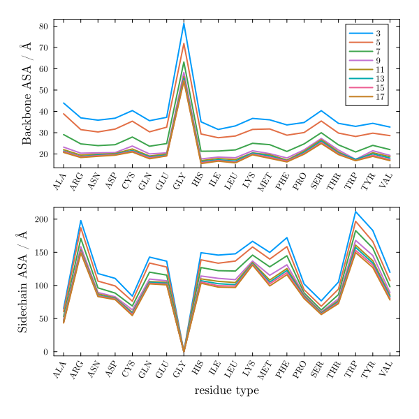
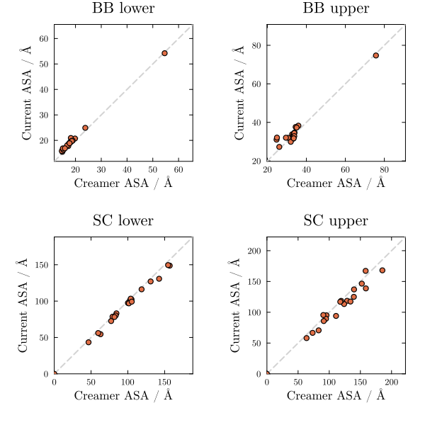
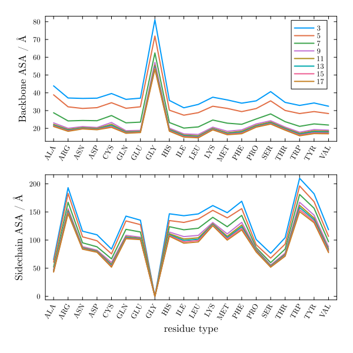
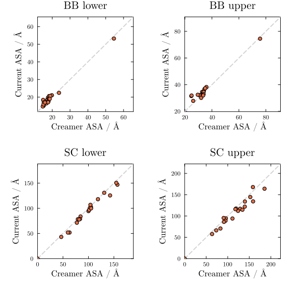
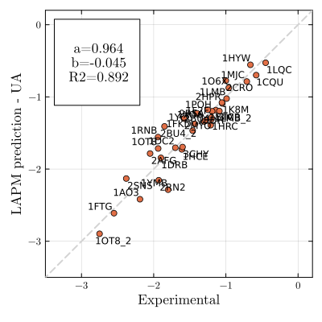
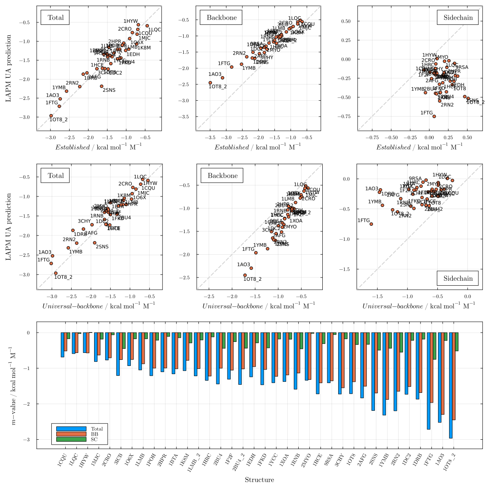

Reproduction of Creamer ASA
This section validates the from-scratch reproduction of the Creamer denatured-state SASA model. The Creamer model estimates backbone and side-chain SASAs of a central residue by extracting overlapping fragments of five consecutive residues from folded protein structures, computing the average over all occurrences of each residue type in both as-found and extended conformations. Agreement between our computed values and Creamer's published backbone and side-chain lower and upper bounds validates both the fragment extraction procedure and the SASA implementation (Supplementary Figures S4 and S5 of the paper).
Figure S4: Backbone SASA per fragment length

Figure S5: Backbone and side-chain SASA comparison with Creamer

Figure S6: Backbone SASA per fragment length (CATH S20)

Figure S7: Backbone and side-chain SASA comparison with Creamer (CATH S20)

Using the parameterized united atom model
For a single structure:
using LAPM, PDBTools
pdb = read_pdb(LAPM.pdb_files["1AO3"], "protein and not element H")
LAPM.mvalue_ua(pdb)All results vs. experimental values — Figure S8
LAPM.plot_ua()
All results vs. other models — Figure S9
LAPM.plot_mvalue_ua()